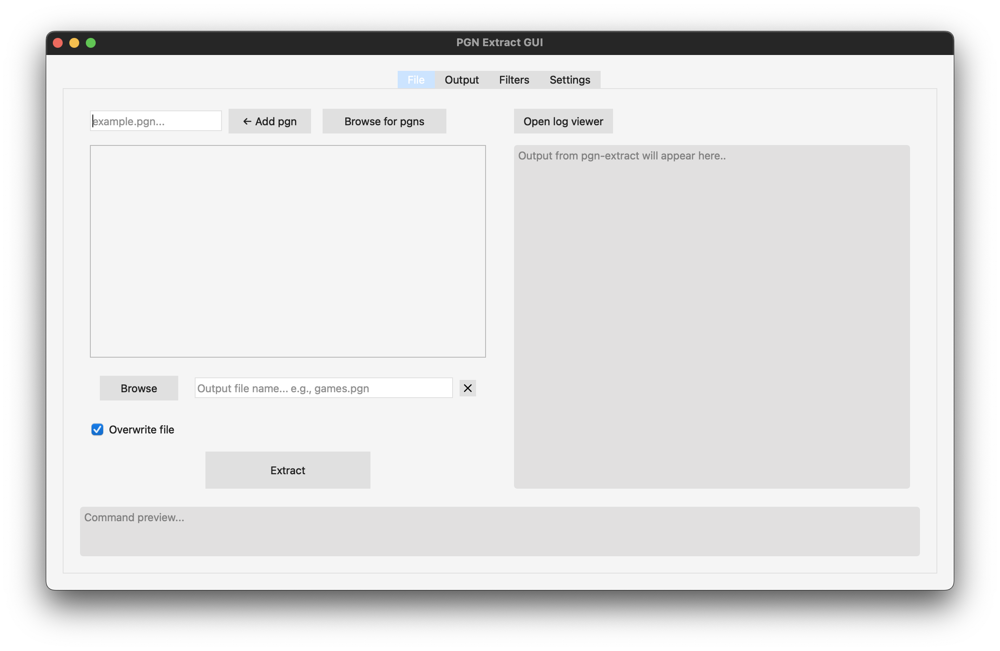
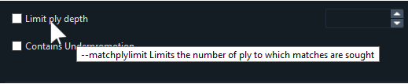

Opening pgn files with the GUI

The main user interface of pgn-extract is designed to be intuitive and user-friendly. It allows you to open and manage pgn files easily.
The simplest way to open a pgn file is to click on the "Browse for pgns" button, from there you will select the pgn files from your computer.
Help

Hovering over most text labels will show you what flag is represented as well as a short description on the functionality of it.